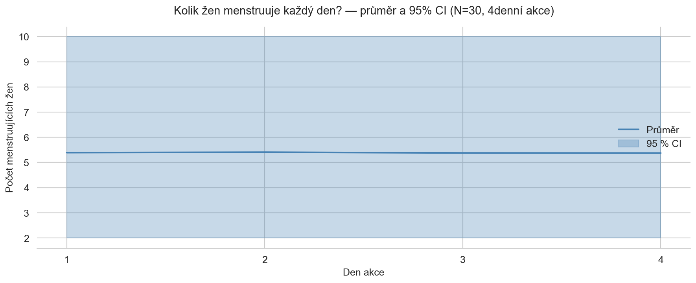
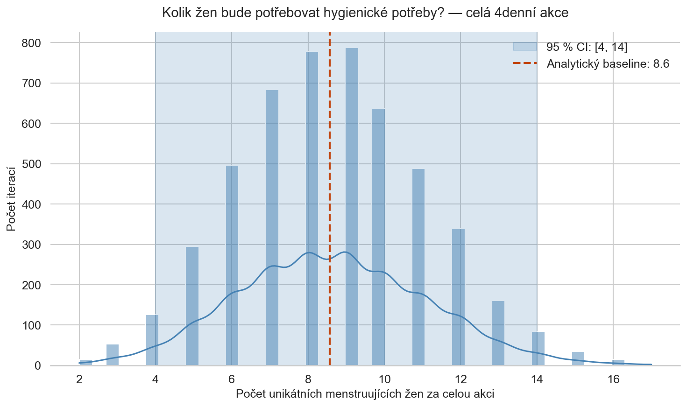
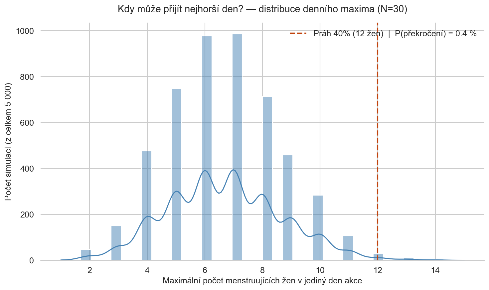
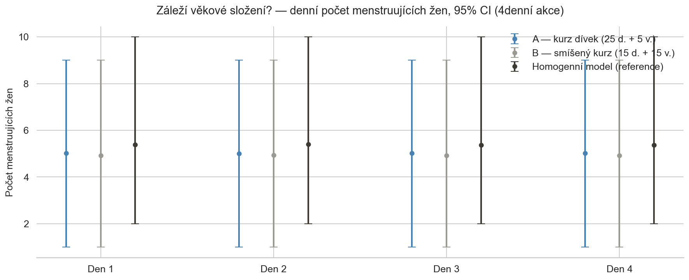
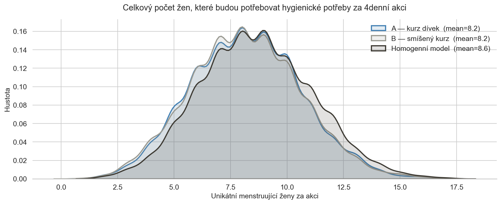
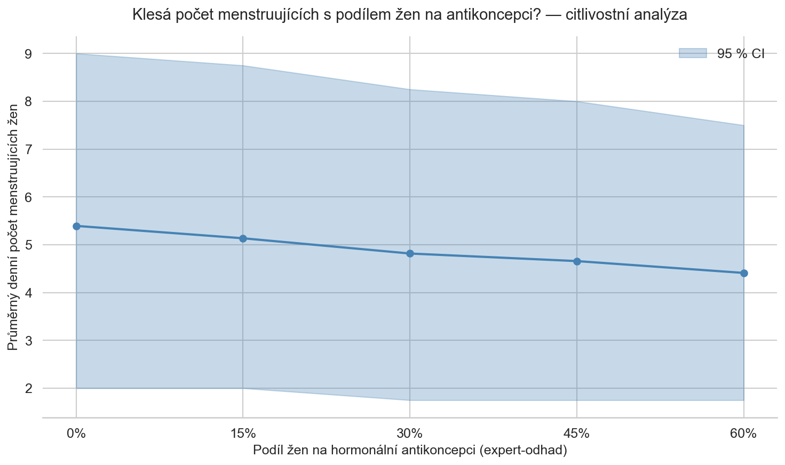
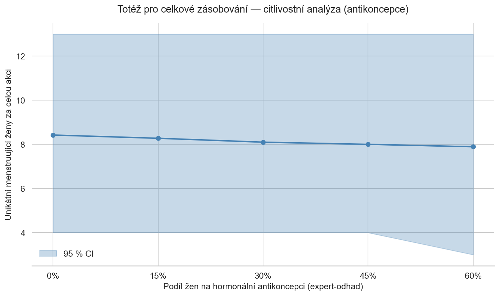
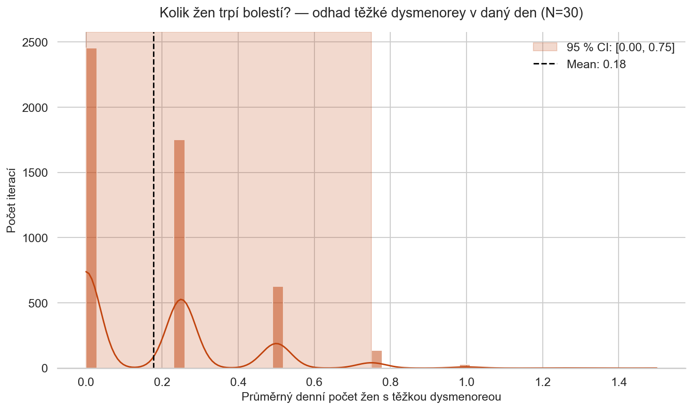
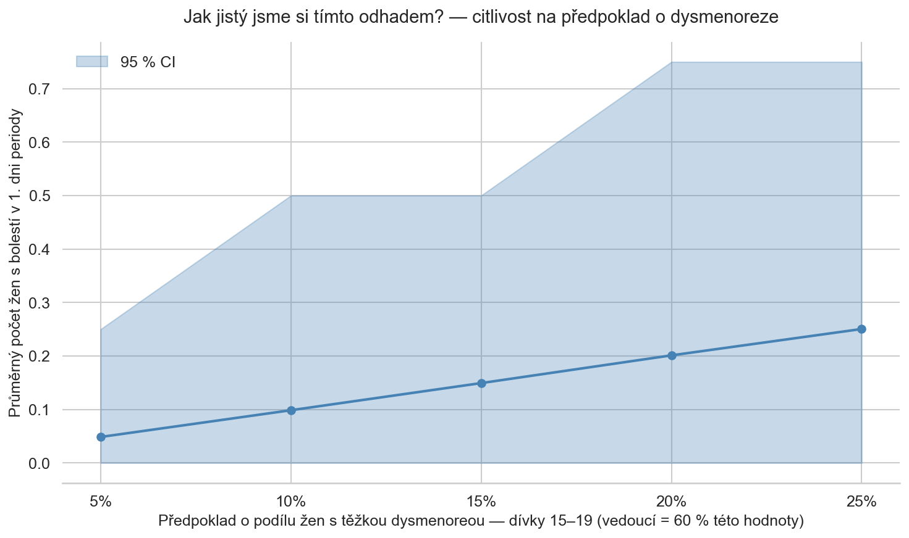

aplikovaná statistika
Kolik žen na skautské výpravě menstruuje?
Statistický odhad pro skautské tábory, puťáky a vodní výpravy
vytvořeno 1. 7. 2026 · aktualizováno 1. 7. 2026
Třídenní puťák s krosnou na zádech. Tábor v lese, kde je latrína sto metrů od stanu a sprcha není každý den. Vodní výprava, kde je soukromí prostor mezi dvěma kánoemi. Na skautských akcích se logistika obvykle plánuje podle zkušenosti vedoucích — kolik náhradních hygienických potřeb do lékárničky, jak dlouhou pauzu si naplánovat na řece. Otázka, kolik dívek a žen bude zrovna menstruovat, se ale obvykle neřeší čísly, řeší se odhadem od oka.
Dá se to ale spočítat. Ne přesně pro konkrétní osobu — to není cílem a ani by to nebylo etické — ale pro skupinu. Pokud známe velikost a věkové složení oddílu, dá se statisticky odhadnout, kolik dívek a žen bude v libovolný den akce menstruovat a jak moc se toto číslo může lišit den od dne. Přesně to je předmětem této první části — od nejjednoduššího odhadu po Monte Carlo simulaci.
nejjednodušší odhad
Menstruační cyklus trvá v průměru kolem 28 dní, krvácení zhruba 5 dní [1], [2]. To znamená, že v kterýkoli konkrétní den je pravděpodobnost, že žena zrovna krvácí, přibližně:
5 / 28 ≈ 18 %
Na 30 dívek to vychází zhruba na 5–6 menstruujících v daný okamžik. Tento výpočet se označuje jako analytický baseline — přímočará pravděpodobnostní kalkulace, která slouží jako referenční bod. Pokud by nám složitější model vrátil číslo jiného řádu, víme, kde hledat chybu.
Baseline ale ignoruje dvě vrstvy variability: cykly nejsou u všech žen stejně dlouhé (variabilita mezi ženami), a ani u jedné ženy cyklus nechodí jako hodinky (variabilita v čase). Aby odhad zachytil i tuto nejistotu, je potřeba simulace.
co je monte carlo simulace
pro každéhoPředstavte si, že chcete zjistit průměrnou délku hry, kde hodně záleží na hodu kostkou. Nechce se vám to počítat — je v tom příliš náhody. Tak ji v počítači prostě tisíckrát odehrajete (za zlomek sekundy) a změříte průměr a rozptyl výsledků.
Monte Carlo simulace dělá přesně to: vygeneruje tisíce virtuálních žen, každé přiřadí náhodnou, ale realisticky rozdělenou délku cyklu a krvácení, a pak simuluje, kdo menstruuje který den. Zopakuje to 5 000krát — a z výsledků spočítá nejen průměr, ale i to, jak moc se výsledky liší: tzv. interval spolehlivosti.
Název pochází z kasina v Monaku — stejně jako u hazardní hry je výsledek jednoho tahu řízen náhodou, ale s tisíci opakováními roste přesnost odhadu: chyba odhadu klesá zhruba s odmocninou počtu iterací.
odkud se berou vstupní parametry
Model generuje pro každou ženu dvě hodnoty z normálního rozdělení, oříznuté na klinicky rozumný rozsah. Parametry vycházejí z lékařské literatury:
- délka cyklu: průměr 28–29 dní — Horský et al. (1981) [1]; Cole et al. (2009) [2]. Literatura udává SD v rozsahu 3,3–4,7 dne; homogenní referenční model níže počítá s konzervativnější hodnotou 3,3 dne, věkově stratifikovaný model (viz níže) používá SD 3,0–4,5 dne podle věkové skupiny
- rozsah cyklu po oříznutí: 21–40 dní — Grieger & Norman (2020) [3]
- délka krvácení: 5 ± 1,5 dne — klinický konsensus
Pro každou ženu se navíc generuje náhodná počáteční fáze cyklu — kde v cyklu se nachází v den 0 akce. Bez toho by všechny ženy v simulaci menstruovaly synchronně, což by byl nesmysl.
Ve verzi s věkovou stratifikací dostane každá věková skupina vlastní parametry — mladší ženy mívají nepravidelnější cyklus [1], [3], [4]. Model umí zohlednit i podíl žen na hormonální antikoncepci, která cyklus zkracuje a zpravidelňuje. Tato prevalence je ale vždy expertní odhad vedoucího, ne číslo z literatury — a citlivostní analýza níže ukazuje, jak moc na ní záleží.
průřezový pohled — kolik dívek menstruuje zrovna teď?
Klíčová otázka pro kapacitu záchodů, soukromého prostoru nebo pauzy na řece: kolik žen menstruuje v konkrétní den? Simulace 30 žen na 4denní akci ukazuje stabilní hladinu kolem 5–6 žen denně — v souladu s baseline odhadem 18 %. Důležité jsou ale okraje: 95% interval spolehlivosti sahá od zhruba 2 do 10 žen. Při plánování kapacity je lepší počítat s horním okrajem, ne s průměrem.

Denní počet menstruujících žen, 30 žen, 4denní akce, 5 000 Monte Carlo iterací. Modrá čára = průměr; modré pásmo = 95% CI. Průměr zůstává stabilní celou akci — menstruace je v populaci rovnoměrně rozložena v čase.
kumulativní pohled — kolik žen bude potřebovat zásoby za celou akci?
Druhá klíčová otázka je kumulativní: kolik unikátních žen bude potřebovat hygienické potřeby alespoň jednou za celou dobu akce? Nestačí počítat jen ty, kdo menstruují v den 1 — ke krvácení může u dalších žen začít i uprostřed výpravy.
Výsledek pro 30 žen a 4 dny: typicky 8–9 žen (průměr 8,6), 95% CI od 4 do 14. Analytický baseline (červená) toto číslo mírně podhodnocuje — Monte Carlo přesněji zachytí příchody nových krvácení během akce.

Distribuce počtu unikátních menstruujících žen za celou 4denní akci (N=30, 5 000 iterací). Histogram + KDE = MC simulace; červená přerušovaná = analytický baseline. Pro zásobování vložkami a tampony je toto číslo relevantnější než denní průměr.
co hrozí v nejhorším dni?
Průměr říká, co čekat za normálních okolností. Logistika ale potřebuje vědět, co nastane ve výjimečně náročný den — ne jen průměr, ale ocasek distribuce, který se musí zvládnout.
Práh 40 % skupiny (= 12 žen ze 30) překročí méně než 0,5 % simulací — extrémní situace, ale ne nemožná. Prakticky to znamená: pro záchody nebo klidový prostor na louce stačí konzervativní plánování pro 9–10 žen, nikoli 15.

Distribuce maximálního počtu menstruujících žen v jediný den akce (N=30, 5 000 iterací). Červená přerušovaná = práh 40 % skupiny (12 žen). Vrchol distribuce kolem 6–8 žen je základ konzervativního odhadu pro plánování kapacit.
záleží, kdo je v oddíle — věková stratifikace
Věkové složení skupiny mění výsledky. Dívky 15–19 mají nepravidelnější cyklus (vyšší SD) a průměrně delší krvácení než vedoucí ve třiceti. Porovnáváme tři scénáře: kurz dívek (A: 25 dívek + 5 vedoucích), smíšený kurz (B: 15 dívek + 15 vedoucích různého věku) a homogenní model jako reference.
Průměrné denní počty jsou si blízké — věková struktura je posouvá jen o desetiny ženy. Hlavní rozdíl je v šířce intervalu spolehlivosti: kurz dívek je logisticky těžší předvídat, zatímco smíšená skupina vedoucích dává stabilnější prognózu. Homogenní model konzervativně nadhodnocuje — bezpečný výchozí bod pro plánování bez znalosti věkové struktury.

Denní průměr a 95% CI pro tři scénáře: A — kurz dívek, B — smíšený kurz, homogenní reference. Offsety v grafu slouží k čitelnosti, data jsou pro stejné dny. Věková struktura posouvá průměr jen mírně, ale ovlivňuje šíři CI.

Distribuce unikátních menstruujících žen za 4denní akci — KDE pro tři scénáře. Překryv distribucí ukazuje, že věková struktura v tomto měřítku mění odhad zásobování jen minimálně. Rozptyl uvnitř každého scénáře je větší než rozdíl mezi nimi.
co změní antikoncepce?
Jedním z parametrů, který vedoucí může odhadnout, ale nikdy přesně znát, je podíl žen na hormonální antikoncepci. Antikoncepce zpravidelňuje a zkracuje cyklus. Přesná prevalence pro danou skupinu ale z literatury nevychází — je to expertní odhad.
Citlivostní analýza ukazuje vliv tohoto předpokladu pro rozsah 0–60 % žen na antikoncepci. Denní průměr klesá od ~5,4 k ~4,4 ženám lineárně a bez překvapení. Ponaučení: i při velké nejistotě o antikoncepci jsou odhadované rozsahy natolik podobné, že pro zásobování stačí konzervativní horní odhad bez antikoncepce.

Průměrný denní počet menstruujících žen v závislosti na podílu žen na hormonální antikoncepci (0–60 %). Modrá = průměr, pásmo = 95% CI. Pokles je lineární a mírný — nejistota o antikoncepci způsobuje menší chybu odhadu, než by se čekalo.

Totéž pro kumulativní zásobování: celkový počet unikátních menstruujících žen za 4denní akci. Vliv antikoncepce je zde ještě menší — potřeba zásobit se týká přibližně stejného počtu žen napříč celým rozsahem předpokladů.
menstruační bolest — neviditelná zátěž
Kapacita záchodů a zásoby vložek jsou jedna věc. Druhou, méně viditelnou, je bolest. Primární dysmenorea — menstruační křeče v prvním dni krvácení — postihuje odhadem 10–25 % menstruujících žen s dopadem na denní aktivity; u mladých dívek je prevalence vyšší (přesná data pro českou populaci chybí).
Simulace s expertními odhady (18 % těžká dysmenorea u dívek 15–19, 10 % u vedoucích) ukazuje: v daný jednotlivý den akce je typicky 0 žen (84 % dnů) nebo 1 žena (15 % dnů) omezena bolestí v 1. dni periody; dva a více případů najednou nastane jen zhruba v 1,3 % dnů. Za celou 4denní akci ale platí, že alespoň jeden takový den se vyskytne zhruba v polovině (51 %) simulovaných akcí — tedy zhruba každá druhá, ne každá třetí. Plánovat, jako by se to nestalo, je statistický optimismus.

Distribuce průměrného počtu žen s těžkou dysmenoreou v daný den (N=30, expert-odhad: 18 % u dívek 15–19, 10 % u vedoucích). Červená barva = upozornění, že jde o odhadovaný diskomfort, nikoli epidemiologicky potvrzené číslo.
Graf níže ukazuje citlivost odhadu na zvolený předpoklad o prevalenci. Výsledek roste lineárně s hodnotou parametru — proto je transparentnost o zvoleném předpokladu klíčová.

Průměrný denní počet žen s těžkou dysmenoreou v závislosti na předpokladu o prevalenci u dívek 15–19 (vedoucí = 60 % této hodnoty). Model je na tento parametr citlivý — při uvádění výsledků vždy explicitně uveďte, jaký předpoklad byl zvolen.
co z toho plyne pro plánování
- Pro 30 žen na 4denní akci: každý den menstruuje 5–6 žen průměrně, ale zásobte se pro 9–10 (horní okraj 95% CI).
- Za celou akci bude hygienické potřeby potřebovat průměrně 8–9 unikátních žen — s reálnou variabilitou od 4 do 14.
- Věková struktura mění rozptyl víc než průměr — kurz dívek je logisticky méně předvídatelný než smíšená skupina.
- Zhruba každá druhá akce přinese den, kdy bude alespoň jedna žena limitována bolestí. Ibuprofen je stejně logistické opatření jako zásoby vložek.
- Statistika zachytí kapacitu, ale ne sociální rozměr — kdo se odváží říci, že potřebuje pomoc? To je otázka pro navazující část s Agent-Based Modeling.
limity tohoto modelu
- Normální rozdělení délky cyklu je aproximace — reálná data jsou pravostranně zešikmená (right-skewed); log-normální nebo Weibullovo rozdělení by bylo přesnější.
- Prevalence antikoncepce a těžké dysmenorey nejsou z CZ/EU peer-reviewed dat pro tuto populaci — jsou expertním odhadem. Citlivostní analýzy ukazují, v jakém rozsahu výsledek kolísá.
- Model nezohledňuje stres, fyzickou zátěž ani sociální dynamiku — to je téma navazujícího ABM.
interaktivní dashboard
Parametry akce (počet žen, délka, věkové skupiny) si lze nastavit přímo v nástroji níže a okamžitě vidět odhad zásob a kapacit.
reference
- [1] Horský, J., et al. (1981). Symptomatic classification of disorders of the menstrual cycle. In J. Horský et al., Ovarian function and its disorders (pp. 149–150). Martinus Nijhoff Publishers.
- [2] Cole, L. A., Ladner, D. G., & Byrn, F. W. (2009). The normal variabilities of the menstrual cycle. Fertility and Sterility, 91(2), 522–527.
- [3] Grieger, J. A., & Norman, R. J. (2020). Menstrual cycle length and patterns in a global cohort of women using a mobile phone app: Retrospective cohort study. Journal of Medical Internet Research, 22(6), e17109.
- [4] Li, H., Gibson, E. A., Jukic, A. M., et al. (2023). Menstrual cycle length variation by demographic characteristics from the Apple Women's Health Study. npj Digital Medicine, 6, 100.